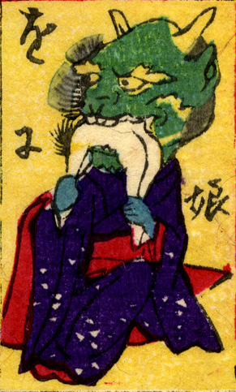

鬼娘；オニムスメ，鬼；オニ，娘；ムスメ，女；オンナ

頭部が鬼となった若い女性。紺の振袖を着ている。頭部は緑の肌の鬼で、2本の角が生えている。人間のようなものを両手に持ち、かじりついている。
著作者：豊貞／出典：親書誌：U426_nichibunken_0225：大新板ばけ物ずくし；オオシンバンバケモノズクシ／日付：2010／資源識別子：U426_nichibunken_0225_0021_0000
Copyright (c)2010- International Research Center for Japanese Studies, Kyoto, Japan. All rights reserved.